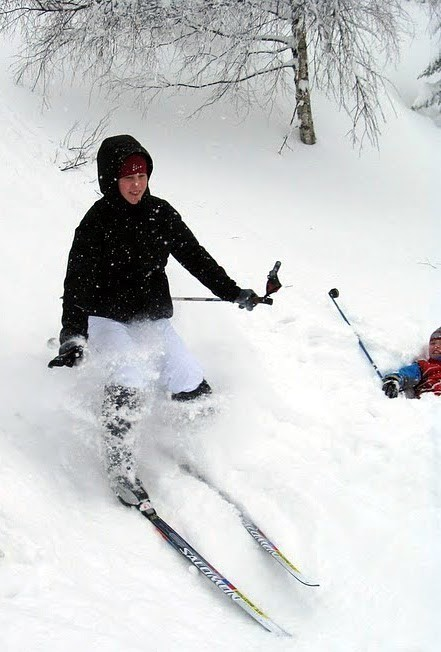
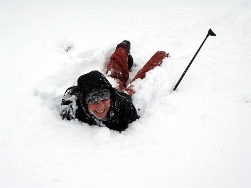

Konečně jsem si sedl a můžu napsat pořádný článek o tom, jak se Tchoříkům dařilo letos v horách Jizerských – tam nahoře, na severu, hned vedle Krkonoš. Zase tam do stejné boudičky, našeho milého srubu na úpatí Jizery, druhé nejvyšší hory na české straně.
Letos to bylo tak trochu na rychlo, nebo se mi to jen zdálo, protože z ničeho nic tu byl týden před prázdninami a já ještě neměl ani boty na běžky. Nějak jsem to ale do kupy dal a v sobotu ráno jsem mohl čekat před panelákem než pro mě Hájkovi přijedou. A jak už se stává tradicí, přijeli, oznámili, že se musí chvátat a rychle vyrazili směr Železná Ruda a Špičák. Navíc byli Zdeněk i Johana nachcípaní – do toho zprávy, že se i Kryštof s Klárou, pro které jsme jeli, jsou na tom podobně.
S poměrně velkou časovou ztrátou jsme dorazili na Špičák, naložili Kláru, dotankovali a zase jsme fičeli na Velhartice. V té době jsme měli být už na Rabí, co se dalo dělat, museli na nás počkat. Na hradě jsme naložili Kryštofa, zmáčkli se pořádně v autě, protože byla sklopená jedna sedačka (tam byly lyže) museli jsme se tři zmáčknout na jednu. Navíc silnici pokrývalo něco mezi sněhem a blátem, takže to klouzalo a jednou jsme málem skončili na chodníku. Cesta to byla divoká, s Boží ochranou jsme ale na Rabí dorazili. Přeházeli jsme věci z jednoho auta do druhého, rozloučili se Zdeňkem a Martinem Satoriem, který si posteskl, že by radši jel s námi – čekali ho totiž mrňata na Kvildě. A pak jsme vyrazili směr sever. Michal, Bětka, já, Kryštof, Klára a Johana.
Cesta ubíhala v poklidu, párkrát jsme se někde stavili – jednou pro boty, jednou kvůli vyložení židlí (které jsme nevyložili, protože bylo zamčeno), jednou pro stěrače. Cesta Rabí – Praha – Jablonec – Josefův Důl ubíhala rychle. Až ke konci přišla nuda a tak po modním vzoru byly vytaženy mobily a ty se jaly trhat naše uši písničkami, pro které je slovo píseň moc ušlechtilé. Ne, nechci urážet cizí vkus, jsou i horší věci.
V Josefově Dole jsme zjistili, že ne všude je sněhu jak u nás a tak jsme v půlce kopce museli zastavit, nechat se kousek Jendou, který byl narychlo přivolán, vytáhnout a nasadit řetězy. Do našeho základního tábora to už byl kousek, jako obvykle jsme vyráželi od babičky Jáni (a Sváti samozřejmě taky).
První věcí, která se dělá pokaždé, ale opravdu pokaždé, když se přijede do Josefáče, je to, že se odhazuje sníh. Do ruky nám vtiskli lopaty a házejte, hoši, házejte. Pak jsme se rychle podívali dovnitř, jak se daří, pozdravili se s druhou půlkou Tchoříků a vyrazili do hor, směr Jizera.
Už jsme byli skoro kompletní – v Jendově autě přijela Jáňa, Sváťa, Lenka a Pavel (a Jenda samozřejmě taky). Sváťa ale ještě den zůstala v Josefové Dole, taky ji zkosila nějaká chřipka a potřebovala ještě den na zotavení.
Od chvíle, kdy jsme přijeli, nepřetržitě sněžilo a když pořád sněží, nemá cenu projíždět s rolbou stopu, to dá rozum. A tak jsme si ji museli prošlapávat sami. Tu a tam už sice od nějakých nadšenců projetá byla, přesto to nebylo nic moc.
K naší chatce jsme se nějak prošlapali. Už ani nevím jak, možná si za pár odstavců vzpomenu, že se při cestě stalo něco zajímavého a rychle to sem dopíšu. I chatku jsme nalezli rychle, ne jako poprvé, kdy jsme bloudili v mlze. Tak první dopisování, málem jsem zapomněl na to, že se mi asi sto metrů od srubu rozpadla lyže. Moje historické vázání se vytrhlo a zůstalo mi na noze. Naštěstí to byl kousek, dalo se to dojít a Michal to i bez problémů opravil (už měl zkušenosti, minulý rok se mi skoro to samé stalo na druhé lyži). To mě přesvědčilo o tom, že potřebuji nové lyže.
Na chatě jsme se opět chopili lopat, házeli cestičky, záchody a ostatní mezitím topili, aby se dalo večer přežít. Prvních pár dní, než se chatka vytopí, bývá vevnitř celkem zima. Nebudu si vymýšlet, až po tento okamžik jsem si vzpomínal celkem jasně, teď už mi to ale začíná splývat a tak to vezmu trochu obecněji. V prvních dnech se rozhodlo, kdo s kým bude mít službu. Postupným kámennůžkopapírovaním jsme se pěkně rozházeli do dvojic kluk-holka a bylo jasné, s kým tento (nad jiné těžší) den budeme vařit.
Už jsem myslel, že budu muset celý první den přeskočit. Hodně jsem se zapotil, abych si vzpomněl co se dělo. Měl jsem si psát deník jako Bětka – její hieroglyfy nám poskytly zábavu na mnoho večerů, navíc si deníček psala do starého školního sešitu, do kterého kdysi psala diktáty. Takže jsme se snažili dešifrovat i je.
První den nás čekala jen krátká zahřívačka. Na vrchol Jizery, dolu na Štolpišskou a hurá na Knajpu. Tam už měla čekat Sváťa.

Teď se rozepíši o tom, co zůstalo všem v paměti asi stoprocentně. Jendu, řečeného Náčelníka, chytly už první den záda a tak s námi raději na první výlet nejel. Dobře udělal. Druhý den to bylo totiž ještě horší. Záda si rozhodil už asi před dvěma týdny, když něco dělal na stromě. Teď se mu to podstatně zhoršilo, záda nikdy nejsou příjemná a když jsme viděli, jak při každém pohybu zatíná zuby, aby neřval moc nahlas, byli jsme z toho všichni trochu nervózní. Druhý den už to vzdal a přivolal horskou službu. Tak nastala velká akce přemísťování Jendy. Trochu jsme se obávali, jak nás horská najde, ale naštěstí to tu asi znali a dostali se k nám v pořádku.
Přijelo jich tuším jedenáct, nejsem si už úplně jistý, malý šéf to tam organizoval, všichni kolem Jendy skákali a my jenom pozorovali jak jim to jde. Za chvíli už byli zpátky na lyžích a Jenda v sáních. Jak to pokračovalo jsme se dozvěděli až za pár dní, když jsme jeli nakoupit do JD1.
Jendu převezli až do nemocnice. Kus cesty urazil v sáních za skútrem, část v sanitce. V nemocnici ho ale moc s radostí nevítali. Jakási mladá doktorka totiž nemytého smradlavého chlapa správně neocenila a po tom co ho různě natahovala a protahovala, prohlásila, že mu nic není a poslala ho domů.
Mimochodem bylo okolo půlnoci. Jenda, který těžko mohl vstát z postele (po prvním pokusu, se jim tam prý složil), byl prohlášen za simulanta a sanitka ho odvezla do Josefova Dolu. Ta ale řetězy neměla a nahoru nevyjela. Co naplat, museli Honzu vyložit dole pod kopcem, ať si to dojde. Obut v takových těch pěnových pantoflích, co už dlouhou dobu letí, batoh vláčejíc za sebou se nějak dobelhal s pomocí staré paní až nahoru. Díky oblbovačkám, které do něj napíchali, se to dalo přežít. To, že ho to vyšlo na 90 kaček snad ani nebudu připomínat.
My si museli nahoře v horách poradit sami. Dostali jsme za úkol chatu pořádně vybydlet – dojíst co se dá. A k naší smůle tam kromě vína a kávy byla snad jen čočka a fazole. Náš jídelníček se tak skládal z polívky pocházející z těchto surovin (+ nějaké ty vločky), čočky s historickým lunchmeatem, čočkové polívky a možná ještě jedněch fazolí.
Kam jsme přesně vyráželi během dalších dnů už si nepamatuji. Jeden den jsme dokonce nevyrazili nikam, což se snad v historii Tchoříků ještě nestalo. Hráli jsme šílenou námořní bitvu na týmy, která zůstala nedohraná, protože už na to nikdo neměl nervy – bylo to šíleně zdlouhavý. Raději jsme to převedli do reálu a dali boj o hrnečky. Každý tým si zakopal někde venku hrneček a cílem bylo ukrást soupeřův. Jednoduché, ale v takové mase sněhu to nabíralo nový rozměr.
Velkým problémem byl večerní program. Na kytaru se nikomu hrát nechtělo, hry jsme připravené žádné neměli a já své hádanky pozapomněl. Hodně jsme improvizovali a nakonec vymysleli celkem solidní hry, kterými jsme se dokázali každý večer zabavit. Nejoblíbenější hrou se stala jednoznačně hra „na vraha“. Hra podobná „Městečku Palermu“ s trochu větší akcí a dedukcí.
V původním plánu byla návštěva Polska a přespání za hranicemi naší vlasti. Ale na to jednak nebylo počasí - celou dobu sněžilo a tak ani cesty pořádně projeté nebyly, rolby začaly jezdit ke konci našeho pobytu. Do Polska jsme se nakonec ale přece jen dostali. A to při naší krásné jízdě za žranicí.
Ten den začal jako vždy jindy rozcvičkou a proběhnutím ve sněhu. Pak vydatnou snídaní, řekněte sami – normální člověk si pět krajíců chleba k snídani nedává. Pak jsme se došoupali až do vesničky Jizerky ("Tady jsou lidi fakt hrozně originální…" prohlásila Jáňa a my jsme jen přikyvovali, "Jizera, Jizerka…"). Tam jsme obsadili jednu hospodu, jako všechny ostatní se jmenovala "Panský dvůr" (zase ta originalita). Po naší luštěninové ozdravné kúře jsme si konečně dali dobré jídlo. Také jsme tam obsadili záchody – takový luxus, splachovací záchod, jsme si nemohli nechat ujít. Není nic nepříjemnějšího než vykonávat potřebu s holým zadkem ve vánici.
Popošli jsme asi tři kilometry a byli jsme v Polsku. A v další hospodě. Tentokrát na racozích. Mělo to být něco jako lívance, mnohem blíž to ale mělo k vdolkům. S borůvkovou marmeládou a smetanou. Smacznego! Přes všechny nedostatky polského pohostinství jsme si pochutnali. Však jsme taky byli zvyklí na hodně. Večer na chatě už jsme měli hlad jenom Michal, Kyšák a já a tak jsme se dorazili pytlíkem těstovin, společně s ostatními si připili vínem, které měl kdosi dostat k Vánocům a začali plánovat Velikonoce…
- Zkratka pro Josefův Důl ↩